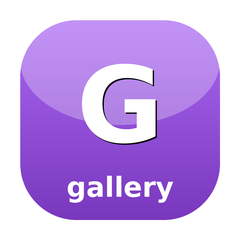

SugarGallery
Poster grids & rails for media TUIs — virtualized PosterGrid, Rail carousel, PosterCard

Browse-row widgets for media terminal UIs: a 2-D virtualized PosterGrid for large libraries, a horizontal Rail carousel for browse rows, and a single PosterCard tile. The grid is sparse — it knows the total item count up front but holds only the cards that have been fetched, keyed by their absolute index, so a 50,000-item library renders as cheaply as a 50-item one; missing indices draw as skeletons and only the rows inside the viewport are ever rendered. Paging is owner-driven: after every cursor move the owner reads visibleRange() (the absolute-index window now on screen — the terminal analogue of the web grid's need-range event) and splices the covering page back in with withItems(). The widgets are renderer-agnostic: a card holds already-rendered poster bytes (produce them however you like, e.g. sugar-image), so this lib pulls in no image decoder. Original SugarCraft component — inspired by terminal list/viewport UX and web media-grid browsing.
Install
composer require sugarcraft/sugar-galleryPosterGrid — virtualized, sparse, owner-paged
use SugarCraft\Gallery\PosterGrid;
use SugarCraft\Gallery\PosterCard;
$grid = PosterGrid::new(cardWidth: 16, posterHeight: 9)
->withViewport($cols, $rows)
->withReset(total: 5000); // a fresh result set
// Keyboard nav (map your keys to these — all clamp + keep the cursor on screen):
$grid = $grid->right(); // ← → step one cell (crosses row edges)
$grid = $grid->down(); // ↑ ↓ move between rows
$grid = $grid->pageDown(); // PgUp / PgDn
$grid = $grid->home(); // Home
$grid = $grid->end(); // End
$grid = $grid->moveTo(2600); // jump (e.g. an A–Z letter offset)After each move, read the visible window and fetch the page(s) covering it, then splice the results back in at their absolute index — the need-range pattern, with needsFetch() as the shipped gate (it re-arms only when the window leaves the range you recorded; a null range always fetches):
// Once, before the first move:
$lastFetched = null; // needsFetch() always fetches on null
// After each move:
[$start, $end] = $grid->visibleRange(overscanRows: 1);
if ($grid->needsFetch($lastFetched, overscanRows: 1)) { // the shipped gate
// fetch items [$start, $end] from your API, build cards keyed by index…
$grid = $grid->withItems([$start => $card0, $start + 1 => $card1, /* … */]);
$lastFetched = [$start, $end]; // record what you covered
}
// Async poster arrived for one cell?
$grid = $grid->withItem($index, $card->withPoster($ansi));Render the visible rows (the cursor shows only when the grid is focused; an empty grid renders '' so the owner paints its own empty-state). Pass a sugar-mouse Manager to make each cell mouse-clickable — wrapped as zone id cell:<index>. The chrome stays on two width-neutral codepoints — focus ▸ U+25B8 (the small triangular right, not the ambiguous ▶ U+25B6) and skeleton shade ░ U+2591 — but the rail bullets ● U+25CF / ○ U+25CB, the bar’s filled leg ▓ U+2593, and truncation … U+2026 are East-Asian-Ambiguous: a user’s ambiguous-width setting can widen them a cell:
echo $grid->render(focused: true);
$frame = $grid->render(true, $zones);
$clean = $zones->scan($frame); // strip markers, record bounds
$zone = $zones->anyInBounds($mouseMsg); // → Zone|null — read $zone->id ("cell:42")Rail — horizontal carousel
use SugarCraft\Gallery\Rail;
$rail = new Rail('Continue Watching', $cards);
$rail = $rail->moveCursor(+1, Rail::perRow($railWidth, $cardWidth));
echo $rail->render($railWidth, focused: true, cardWidth: 16, posterHeight: 9);The heading rides the same title guard a card uses (AnsiGuard::stripControls()) and both header lines are clamped to the rail width; the empty state is localised via Lang::t('rail.empty') (16-locale family in lang/). moveCursor() takes a delta — restore an arbitrary (cursor, scroll) pair by constructing Rail with its third and fourth arguments (a stale pair is clamped, not restored verbatim: scroll follows the cursor).
PosterCard — one tile
use SugarCraft\Gallery\PosterCard;
$card = new PosterCard(id: '42', title: 'The Matrix', posterUrl: $url);
$card = $card->withPoster($renderedAnsi); // attach when the async render lands
$card = $card->withSafePoster($fromCache); // …or sweep untrusted bytes: SGR stays, controls go
$card = $card->withProgress(0.6); // optional continue-watching bar
echo $card->render(focused: true, width: 16, posterHeight: 9);Overlay posters (withImage()) draw as a single U+E002-range marker cell inside the reserved block — the image renderer paints the real graphics there, and the marker deliberately survives every text sweep (it lives outside the zone-sentinel window). Text-extraction paths (search, clipboard) therefore see an unassigned private-use glyph at that cell; sugar-core's Sanitize::stripPrivateUse() sweeps the whole block out of extracted text without touching the frame.
Behaviour
total() up front but holds only fetched cards keyed by absolute index; indices with no card yet render as ░ skeleton placeholders.withFailed(): it falls back to the plain skeleton and hasPoster() stays false, so a retry policy re-queues it. An empty grid renders nothing — emptyMessage() hands the owner the localised sentence to paint instead.visibleRange(overscanRows) returns the absolute-index window on screen (with optional prefetch overscan) — the terminal analogue of the web grid's need-range event; the owner fetches and splices via withItems().left/right/up/down/pageUp/pageDown/home/end/moveTo all clamp into range and scroll the minimum needed to keep the cursor's row visible.cardWidth × (posterHeight + 2) box (reserving a title and a progress row), so columns and rows always line up regardless of which cards carry progress bars.Manager to render() and each real cell is wrapped as zone id cell:<index> for hit-testing — the caller scans the frame and resolves clicks.PosterCard holds already-rendered poster bytes (produce them however you like, e.g. sugar-image), so the lib pulls in no image decoder.Use it for
- Large media libraries — a browse grid over thousands of posters fetched lazily a page at a time.
- Browse rows — horizontal Rail carousels (Continue Watching, per-library rows) with their own cursor and scroll.
- A–Z / letter jumps —
moveTo()to an absolute offset, then page in whatever the visible window now covers. - Async posters — start with skeleton cells, then
withItem()/withPoster()each tile as its render resolves. - Mouse-clickable grids — wire sugar-mouse to resolve
cell:<index>clicks back to items.
Source & demos
Dependencies
- SugarCore —
I18n\Langpowers the localized notices andUtil\Widthmeasures every cell - SugarStyle —
Layout::joinHorizontal*/joinVertical*stitches cells, rows, and rails together - SugarMouse — a hard require, but its use is opt-in: pass a
Zones\Managertorender()and each cell is wrapped as zone idcell:<index>; without one nothing is marked - SugarImage — a typical (but not required) source of the pre-rendered poster bytes a PosterCard holds
API
| Class | Method | Description |
|---|---|---|
| PosterGrid | static new(int $cardWidth, int $posterHeight, int $hSpacing = 2, int $vSpacing = 1): self | A new empty grid with the given card geometry |
| PosterGrid | withReset(int $total): self | Begin a fresh result set — drop cached cards, return the cursor to the top |
| PosterGrid | withTotal(int $total): self | Update the known total without dropping cards, clamping the cursor |
| PosterGrid | withItems(array $items): self | Splice a page of cards in at their absolute indices (new cards win) |
| PosterGrid | withItem(int $index, PosterCard $card): self | Set/replace a single card by absolute index (e.g. an async poster) |
| PosterGrid | withViewport(int $cols, int $rows): self | Resize the rendered area, re-clamping scroll to keep the cursor visible |
| PosterGrid | left/right/up/down(): self | Move the cursor one cell, clamped and kept on screen |
| PosterGrid | pageUp/pageDown(): self | Move the cursor one viewport of rows |
| PosterGrid | home/end(): self | Jump the cursor to the first / last item |
| PosterGrid | moveTo(int $index): self | Jump the cursor to an absolute index (e.g. an A–Z offset), clamped |
| PosterGrid | visibleRange(int $overscanRows = 0): array | The inclusive [start, end] absolute-index window on screen — the need-range; [0, -1] when empty |
| PosterGrid | visibleCards(int $overscanRows = 0): array | The loaded cards inside the window, keyed by absolute index — skeletons absent, order ascending |
| PosterGrid | indicesNeedingPoster(int $overscanRows = 0, ?callable $isFillable = null, ?callable $isCached = null): array | Which cells to queue an async poster for — the renderer-agnostic half of the fill loop; what counts as sourceable or already cached arrives as callbacks |
| PosterGrid | needsFetch(?array $lastFetched, int $overscanRows = 0): bool | Whether the visible window reaches past the range already fetched |
| PosterGrid | withoutItemsOutside(array $range): self | Drop the art of cells outside the live window, so a long scroll does not hold every poster ever rendered |
| PosterGrid | columns/visibleRows/totalRows/cellHeight(): int | Derived geometry of the current layout |
| PosterGrid | total/loadedCount/cursorIndex/cursorRow/scrollRow(): int | Counts and cursor/scroll position accessors |
| PosterGrid | item(int $index): ?PosterCard | The card at an absolute index, or null when not loaded |
| PosterGrid | cursorCard(): ?PosterCard | The card under the cursor, or null |
| PosterGrid | isEmpty(): bool | Whether the grid has no items |
| PosterGrid | render(bool $focused = true, ?SugarCraft\Mouse\Zones\Manager $zones = null): string | Render the visible rows; cursor shown only when focused; optional sugar-mouse cell marking; '' when the grid is empty |
| PosterGrid | positionText(): string | The grid's position readout — " (3/12)", or '' for an empty grid; the grid frame is deliberately chrome-free, so the composing screen places this string where it belongs |
| PosterGrid | fitsViewport(?int $cols = null, ?int $rows = null): bool | Whether the cell geometry actually fits a viewport — columns() and visibleRows() floor at one, so a sub-cell viewport renders yet silently lies about what is visible; defaults to the grid's own current viewport |
| PosterGrid | static emptyMessage(): string | The localised empty-grid notice (lang key grid.empty) — render() itself stays silent on an empty grid, so this is the seam for an owner-painted message; resolves live, honouring a mid-session locale switch |
| PosterGrid | static clearBoxCache(): int | Drop the shared boxed-cell memo, returning how many entries were cleared — purely an optimization, never changes a single rendered byte |
| Rail | __construct(string $title, array $cards = [], int $cursor = 0, int $scroll = 0) | A horizontal carousel of PosterCards with a title, cursor, and scroll offset; a stale pair is clamped, not restored verbatim |
| Rail | static new(string $title, array $cards = [], int $cursor = 0, int $scroll = 0): self | Canonical factory — mirrors the public constructor |
| Rail | withCards(array $cards): self | Replace the card list, clamping cursor/scroll into range |
| Rail | withCard(PosterCard $card): self | Replace a single card by id (e.g. when its poster finishes loading) |
| Rail | withTitle(string $title): self | Return a copy with a different title (immutable+fluent) |
| Rail | withCursor(int $cursor): self | Return a copy with a different cursor, clamped to [0, count-1]; scroll clamps to at most the cursor so the card stays visible |
| Rail | focusedCard(): ?PosterCard | The card under the cursor, or null |
| Rail | isEmpty(): bool | Whether the rail has no cards |
| Rail | moveCursor(int $delta, int $perRow): self | Move the cursor by $delta, scrolling so it stays visible |
| Rail | static perRow(int $railWidth, int $cardWidth, int $spacing = 2): int | How many cards of $cardWidth fit in $railWidth at $spacing gap |
| Rail | render(int $railWidth, bool $focused, int $cardWidth, int $posterHeight, int $spacing = 2): string | Render the title plus the visible slice of cards; the heading is control-stripped and both header lines clamped to $railWidth |
| PosterCard | __construct(string $id, string $title, ?string $posterUrl = null, ?float $progress = null, ?string $poster = null, ?string $styledTitle = null, ?string $posterImage = null, ?int $imageId = null, bool $failed = false) | One tile: poster area, title, optional progress bar, and the failed-fetch flag |
| PosterCard | static new(string $id, string $title, ?string $posterUrl = null, ?float $progress = null, ?string $poster = null, ?string $styledTitle = null, ?string $posterImage = null, ?int $imageId = null, bool $failed = false): self | Canonical factory — mirrors the public constructor |
| PosterCard | withPoster(string $ansi): self | Attach the rendered ANSI poster (e.g. when an async render resolves) — emitted verbatim, the caller is the trust boundary |
| PosterCard | withSafePoster(string $ansi): self | Attach poster bytes through the AnsiGuard sweep row-by-row — colours and block glyphs stay byte-identical, every control sequence goes |
| PosterCard | withImage(string $bytes, int $id): self | Attach an overlay fill (sixel / kitty / iterm2): the card draws only the marker cell, the runtime paints the art over it |
| PosterCard | withStyledTitle(string $ansi, bool $assertSafe = false): self | A pre-styled title, emitted verbatim — the caller is the trust boundary; $assertSafe guards the bytes first and throws on anything but SGR |
| PosterCard | withSafeStyledTitle(string $ansi): self | The coercion half: keep the SGR, drop every other escape — and keep the plain title when only styling and ASCII blank space survive (`trim` semantics; a non-breaking space is text) |
| PosterCard | static assertSafeAnsi(string $ansi): string | Return the styled title or throw — the same guard, standalone |
| PosterCard | withProgress(?float $progress): self | Set (or clear) the continue-watching progress bar |
| PosterCard | withFailed(bool $failed = true): self | Mark the cell's last fetch as failed (clear with withFailed(false)) — the cell falls back to the plain skeleton and hasPoster() reports it unfilled so a retry policy still re-queues it; attaching real art afterwards does NOT clear the flag, pass withFailed(false) alongside the fill |
| PosterCard | isFailed(): bool | Whether the last fetch for this cell failed |
| PosterCard | hasPoster(): bool | Whether art will actually paint here — inline text or a marker-addressed overlay |
| PosterCard | render(bool $focused, int $width, int $posterHeight): string | Render a fixed-$width block: poster (or placeholder) rows, a title row, and a progress row when set |
| PosterCard | static clearFitCache(): int | Drop the shared fitted-body memo, returning how many entries were cleared — purely an optimization, never changes a single output byte |
| AnsiGuard | static assertSafe(string $ansi): string | Return $ansi when it carries only SGR styling and printable text, else throw with the byte offset and hex of the offender |
| AnsiGuard | static isSafe(string $ansi): bool | The same question without the exception |
| AnsiGuard | static sanitize(string $ansi): string | Drop every non-SGR escape and control byte, keeping styling and text — colour may be lost, a cursor move never will be |
| AnsiGuard | static stripControls(string $text): string | Drop escapes and styling alike — what a plain, untrusted title is rendered through (card title and Rail heading) |
| AnsiGuard | static stripSentinels(string $text): string | Surgically drop forged U+E000/U+E001 zone sentinels (delegates to sugar-core Sanitize::stripZoneSentinels()) — anything handed to a zone-marking Manager must pass this sweep first; legitimate U+E002-and-up image markers survive untouched |
| Lang | static t(string $key, array $params = []): string | i18n facade over the 16-locale lang/ family — three keys today: rail.empty (the Rail heading's empty-state line), card.failed (a PosterCard in the failed-fetch state) and grid.empty (the empty PosterGrid message) |
Demos.
VHS-recorded GIFs of the flagship examples shipped with the library. Regenerated automatically on every push that touches the source.